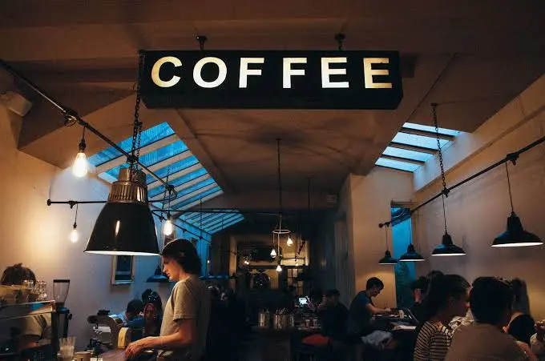

Para retirar
Encargá.
Retirá.
Sin esperar.
- 1Escribinos por Instagram o WhatsApp y contanos qué querés.
- 2Te confirmamos el pedido y la hora.
- 3Pasás por el local y lo retirás.
Nosotros
Encuentros.
Historias.
Amigos.
En Gurú Café creemos que una buena pausa empieza con un buen café. Café de especialidad, vermú y algo rico para llevar, en un lugar pensado para encontrarte con los tuyos.

Dónde estamos
Calle 13
N.º 4478.
Berisso Centro, Buenos Aires
- Lunes a viernes
- 8:00 a 20:00
- Sábados y domingos
- 9:00 a 21:00
Horarios de ejemplo.
Pagás con
- Efectivo
- Transferencia
- QR
- Débito
- Crédito